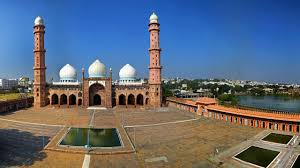
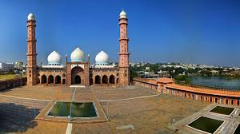

Bhopal is the capital of Madhya Pradesh, India, and the second largest city of the state, after Indore. Bhopal is also called the City of Lakes.[1] It is the headquarters of Bhopal District. It is in the central part of India. The city is believed to have first been called Bhojpal, named after the King of Bhoj. According to this theory, it was later changed to Bhopal. Bhopal has an average elevation of 499 metres (1637 ft).
 
